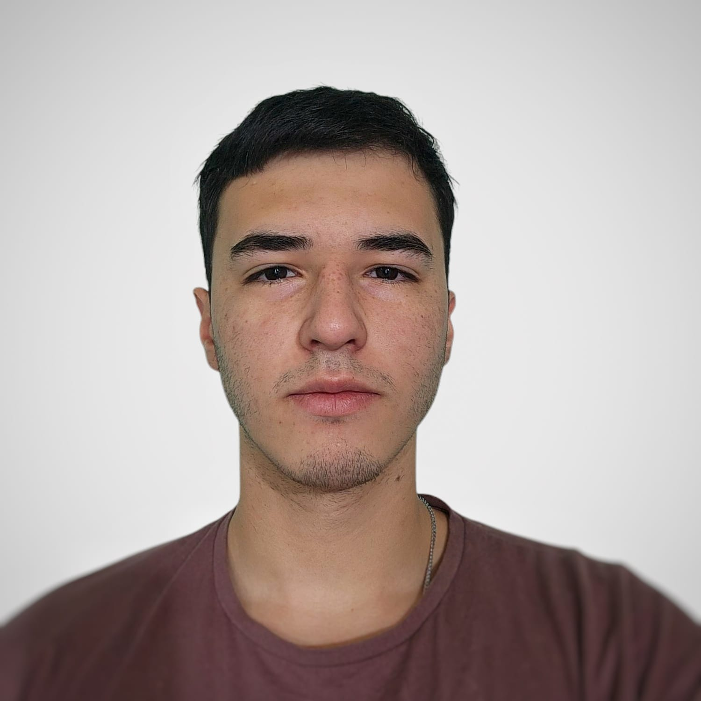

Perfil

Soy desarrollador de software con experiencia en inteligencia artificial y ciencia de datos. Mis roles han abarcado la creación de programas de escritorio, análisis de datos y programación de microcontroladores. Destaco por mi creatividad y mi capacidad para pensar fuera de lo convencional a la hora de resolver problemas complejos. Además, poseo habilidades de organización, planificación y comunicación desarrolladas al trabajar en equipos diversos.
Me adapto rápidamente a nuevos entornos y tareas. Actualmente estoy cursando la carrera de Ingeniería en Inteligencia Artificial en la Universidad Nacional del Litoral (UNL‑FICH) y ampliando mis conocimientos mediante un bootcamp de MLOps en Udemy. Además de mis intereses técnicos, disfruto enseñar y aprender de los demás.
Experiencia en IT
SkillMatrix – Folder IT
Full‑Stack DeveloperMigración de un backend y frontend de una aplicación de habilidades y tecnologías para empleadores【747284766966841†screenshot】.
Descripción: SkillMatrix es un API REST Full que permite a empresas conocer las tecnologías y habilidades de sus colaboradores y postulantes. Como desarrollador participé en la migración del backend a una nueva arquitectura, actualizando la base de datos y adaptando el frontend【747284766966841†screenshot】.
Tecnologías: React, Node.js, TypeScript, Nest.js, Next.js, Postgres, MySQL, Postman【747284766966841†screenshot】.
Equipo: 1 Project Manager, 3 desarrolladores y 1 QA Engineer【747284766966841†screenshot】.
Túnel Subfluvial Santa Fe – Paraná
Full‑Stack DeveloperDesarrollo full‑stack de un sistema ERP para la administración integral del túnel【103249059437549†screenshot】.
Descripción: Participé en el desarrollo de un ERP que abarca gestión presupuestaria, inventarios, contabilidad y gestión de personal, incluyendo vacaciones y viajes【103249059437549†screenshot】. Realicé el análisis de requisitos, entrevistas con usuarios, diseño de casos de uso, estructura de datos y codificación del backend y frontend.
Tecnologías: Java (Spring, Spring Boot, Hibernate), Angular, Angular Material, Electron, Python (Flask), API Rest, SQL Server【103249059437549†screenshot】.
Equipo: Project Manager, 2 líderes técnicos, 4 desarrolladores full stack, 3 frontend, 3 backend y 2 QA Engineers【103249059437549†screenshot】.
Procesamiento de señales
Proyecto de DSPDiseño de algoritmos de interpolación, muestreo y filtrado para datos sensoriales【103249059437549†screenshot】.
Descripción: Desarrollé algoritmos en Python para procesar señales (sonido, luz, vibración) incluyendo interpolación, muestreo, filtrado y optimización del código utilizando NumPy【103249059437549†screenshot】.
Tecnologías: Python, Matemática, Física.
Equipo: Product Owner y tres desarrolladores【103249059437549†screenshot】.
Analista de datos – INER
Data ScientistAnálisis de la base nacional de tuberculosis para detectar tendencias y correlaciones【103249059437549†screenshot】.
Descripción: Trabajé con la base de tuberculosis reportada en Argentina (1995‑2023) para normalizar datos, convertir hojas de cálculo en DataFrames, aplicar métodos estadísticos, calcular índices y generar gráficos con Matplotlib【103249059437549†screenshot】.
Tecnologías: Python, Pandas, NumPy, Matplotlib【103249059437549†screenshot】.
Equipo: Director y tres desarrolladores【103249059437549†screenshot】.
Software de liquidación salarial
Desarrollador DesktopAplicación de escritorio para cálculo de sueldos con generación de recibos y envío por email【326214156368514†screenshot】.
Descripción: Diseñé y desarrollé un software que calcula salarios a partir de las horas trabajadas y variables como antigüedad y puntualidad. El sistema incluye un módulo de login, conexión a base de datos y generación de PDF con el recibo para enviar por email【326214156368514†screenshot】.
Tecnologías: Java, MySQL, XAMPP【326214156368514†screenshot】.
Equipo: Project Manager, un desarrollador frontend, un backend y un QA Engineer【326214156368514†screenshot】.
Diseño de algoritmos – Tecnomate
CompetenciaResolución de problemas computacionales complejos en equipo【326214156368514†screenshot】.
Descripción: Participé en un proyecto de diseño avanzado de algoritmos resolviendo problemas técnicos bajo restricciones de tiempo y memoria【326214156368514†screenshot】. Se enfatizó el análisis crítico, la optimización y la colaboración en equipo.
Tecnologías: Python, Java, C++【326214156368514†screenshot】.
Equipo: Dos desarrolladores y un QA Engineer【326214156368514†screenshot】.
Automatización del hogar (IoT)
Proyecto IoTDiseño de circuitos y control remoto de luces, puertas y ventanas【326214156368514†screenshot】.
Descripción: Automatizamos la iluminación y el control de puertas y ventanas mediante un smartphone, diseñando el circuito eléctrico, programando el microcontrolador e integrando con Arduino IoT Cloud【326214156368514†screenshot】.
Tecnologías: Arduino IDE, Arduino Cloud, Arduino IoT API【326214156368514†screenshot】.
Equipo: Desarrollador de software, ingeniero electrónico y QA Engineer【326214156368514†screenshot】.
Drone controlado por gestos
RobóticaDesarrollo de un dron controlado mediante movimientos de la mano【326214156368514†screenshot】.
Descripción: Concebí y construí un dron operado mediante gestos usando sensores MEMs (MPU‑6050) y un microcontrolador ESP32【326214156368514†screenshot】. Diseñé el circuito, los algoritmos de procesamiento de datos y realicé pruebas y ajustes.
Tecnologías: Arduino IDE, electrónica, matemática y física【326214156368514†screenshot】.
Equipo: Desarrollador de software y ingeniero electrónico【326214156368514†screenshot】.
Desarrollador de juego tipo Galaga
Juego ArcadeProgramación de un juego arcade en C++ usando SFML【518303591537756†screenshot】.
Descripción: Implementé todas las mecánicas del juego (movimiento del jugador, oleadas de enemigos, disparos y colisiones) y la integración de sonido y animaciones【518303591537756†screenshot】. Apliqué principios de programación orientada a objetos y colaboré en pruebas de rendimiento.
Tecnologías: C++, SFML, Zinjai【518303591537756†screenshot】.
Equipo: Tres desarrolladores (interfaz, mecánicas de juego) y un QA Engineer【518303591537756†screenshot】.
Ingeniero de Prompts AI
OutlierCorrección de respuestas de modelos de lenguaje y redacción en LaTeX【518303591537756†screenshot】.
Descripción: Verifiqué y corregí respuestas generadas por modelos de lenguaje, resolviendo ejercicios de matemáticas y física según las necesidades y reescribiéndolos en LaTeX【518303591537756†screenshot】.
Tecnologías: Python, LaTeX, Matemática【518303591537756†screenshot】.
Equipo: Lector de prompts, solucionador de prompts y redactor en LaTeX【518303591537756†screenshot】.
Experiencia adicional
Atención al público
2024‑2025Atención al cliente, manejo de caja y armado de pedidos en Aloja Boulevard 2690【410994484317424†screenshot】.
Realicé tareas de atención a clientes, preparación de pedidos y reposición de góndolas【410994484317424†screenshot】. Esta experiencia me permitió fortalecer mis habilidades de servicio y comunicación.
Técnico informático autónomo
2019‑actualidadDiagnóstico y reparación de sistemas informáticos y mantenimiento de redes【410994484317424†screenshot】.
Desde 2019 brindo servicios de reparación de PCs y dispositivos, instalación de programas y sistemas operativos e implementación de redes【410994484317424†screenshot】. También dicto clases particulares de Matemática, Física y Programación.
Analista de datos (evento)
INERTrabajo eventual para el Instituto Nacional de Enfermedades Respiratorias【410994484317424†screenshot】.
Colaboré con el INER como analista de datos, aplicando mis habilidades de ciencia de datos y estadística.
Otros roles
VariosUber (conductor) y Rappi (rider)【410994484317424†screenshot】.
He trabajado como conductor de Uber y repartidor de Rappi, lo que me enseñó a gestionar mi tiempo y a interactuar con una gran variedad de personas.
Proyectos interactivos
Juego de la Vida
Explora la evolución de células en la famosa simulación de Conway. Puedes iniciar, detener, limpiar y generar patrones aleatorios.
Educación & Formación
-
UNL‑FICH – Ingeniería en Inteligencia Artificial2023 – En cursoCursando la carrera de ingeniería en inteligencia artificial【189923868103679†screenshot】.
-
EET N° 480 Manuel Belgrano – Técnico en informática2017 – 2022Recibido con honores, con conocimientos en redes, electricidad, electrónica y programación【93843279220151†screenshot】.
-
Fundamentos de programación2019Cursos de programación 1 y 2 donde aprendí C++ y Python【189923868103679†screenshot】.
-
Argentina Programa2019Introducción al desarrollo web (HTML, JavaScript y CSS)【189923868103679†screenshot】.
-
Curso de Microcontroladores2019Aprendí las bases de la programación de placas Arduino utilizando C y Arduino IDE【189923868103679†screenshot】.
-
Curso de Java2017Fundamentos de programación orientada a objetos en Java【189923868103679†screenshot】.
-
Curso de RAG – DeepLearning.ai2025Capacitación en Retrieval‑Augmented Generation (RAG), donde aprendí a integrar modelos de lenguaje con fuentes de datos externas mediante embeddings y sistemas vectoriales.
-
Bootcamp de MLOps (Udemy)2025 – En cursoFormación práctica en Machine Learning Operations: versionado de modelos, despliegue con Docker y Kubernetes, MLflow y monitoreo.
Habilidades & Conocimientos
Lenguajes de programación
- Python
- Java
- JavaScript / TypeScript
- C++
Frameworks & Librerías
- React, Next.js, Nest.js, Node.js
- Angular, Angular Material, Electron
- Spring Boot, Hibernate
- Flask, Flask RestPlus
- Pandas, NumPy, Matplotlib, Pygame, SFML
Bases de datos & DevOps
- MySQL, PostgreSQL, SQL Server
- Git & GitHub
- Docker, Docker Compose, Kubernetes (MLOps)
- MLflow, FastAPI, API REST
- Arduino Cloud & IoT APIs
Otras herramientas
- Visual Studio Code, IntelliJ IDEA, NetBeans, Zinjai
- Android Studio, Jupyter Notebook, DBeaver
- LaTeX, Octave, Breakpoint
- XAMPP, Postman
Aptitudes & Idiomas
- Creatividad y pensamiento lateral【747284766966841†screenshot】
- Planificación, organización y comunicación efectiva【747284766966841†screenshot】
- Responsabilidad, puntualidad y compromiso【93843279220151†screenshot】
- Adaptabilidad a nuevas tareas y entornos【93843279220151†screenshot】
- Experiencia en instalación y mantenimiento de sistemas informáticos y redes【410994484317424†screenshot】
- Conocimientos de hardware y software de dispositivos【410994484317424†screenshot】
- Presentaciones en público y docencia【410994484317424†screenshot】
- Idiomas: Español nativo, Inglés nivel B2【189923868103679†screenshot】
Contacto
Información
Teléfono: +54 3497 412 897
Email: frugonizavalaignacio@gmail.com
Ubicación: Santa Fe, Argentina